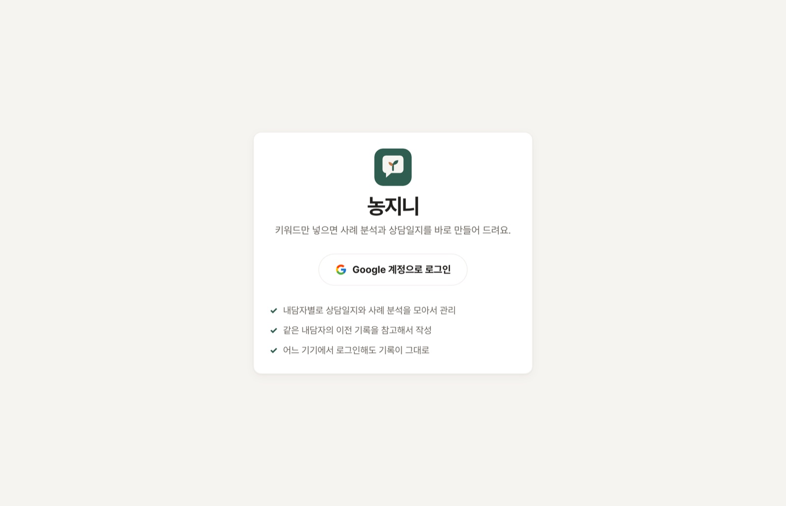
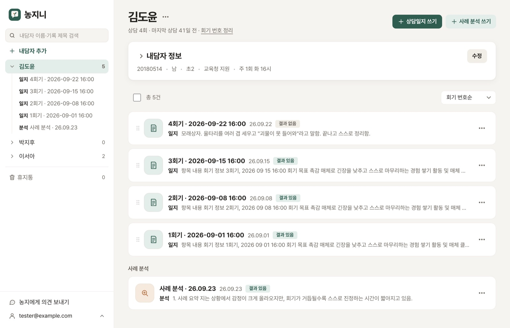
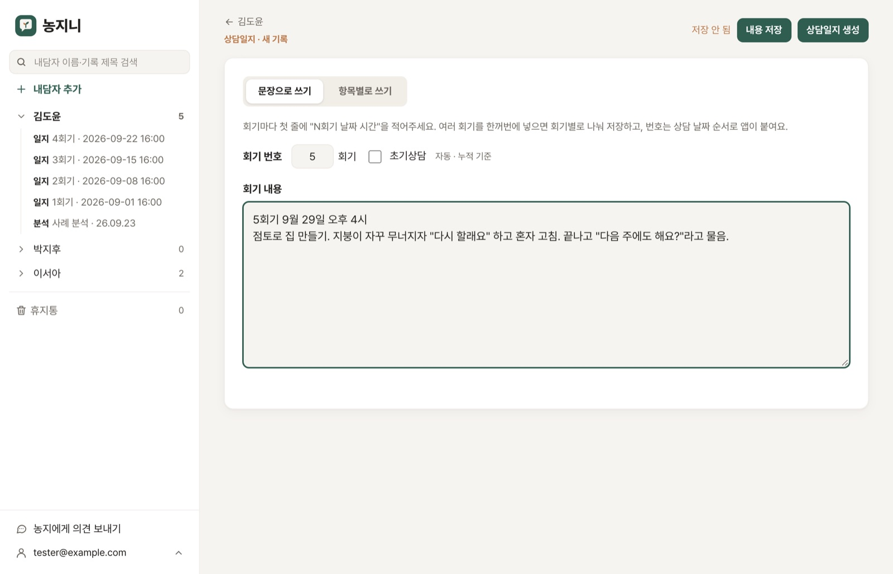
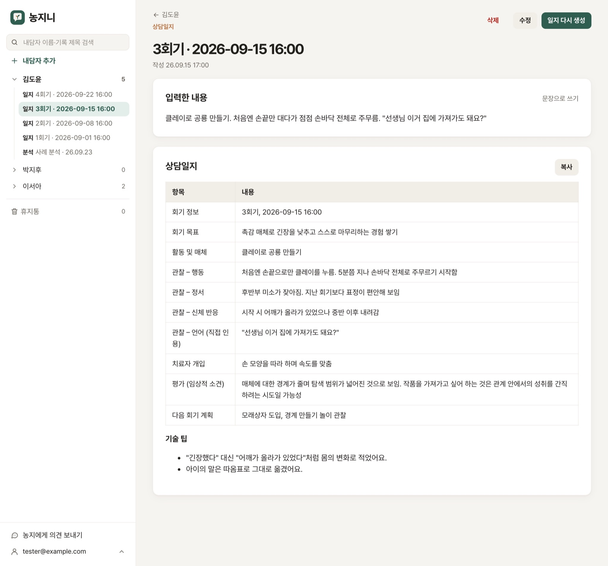
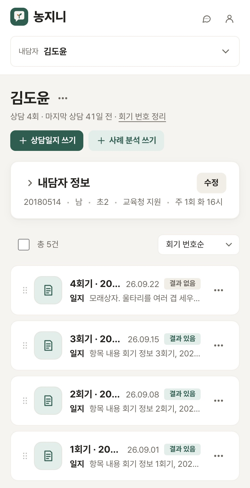

아동 상담 선생님을 위한 기록 앱이에요. 가입 없이 화면으로 먼저 구경해 보세요. 사용 순서는 딱 4단계예요.
회원가입 양식은 없어요. 버튼 한 번이면 끝.

왼쪽에 내가 맡은 아이들이 있어요. 아이를 누르면 지금까지의 회기가 순서대로 보여요.

문장이 엉성해도 괜찮아요. 몇 회기인지는 앱이 알아서 붙여 줘요.

관찰한 행동, 아이의 말, 다음 회기 계획까지 칸별로 나눠 줘요. 그대로 기관 양식에 붙여 넣으면 끝.


화면 속 아이 이름과 기록은 모두 설명을 위해 지어낸 예시예요.